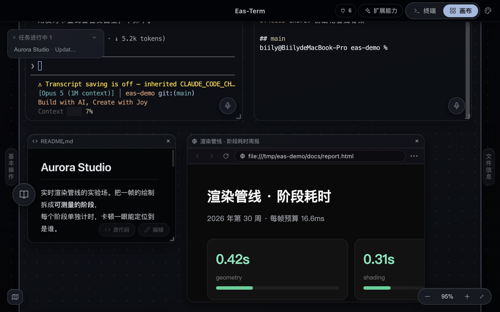
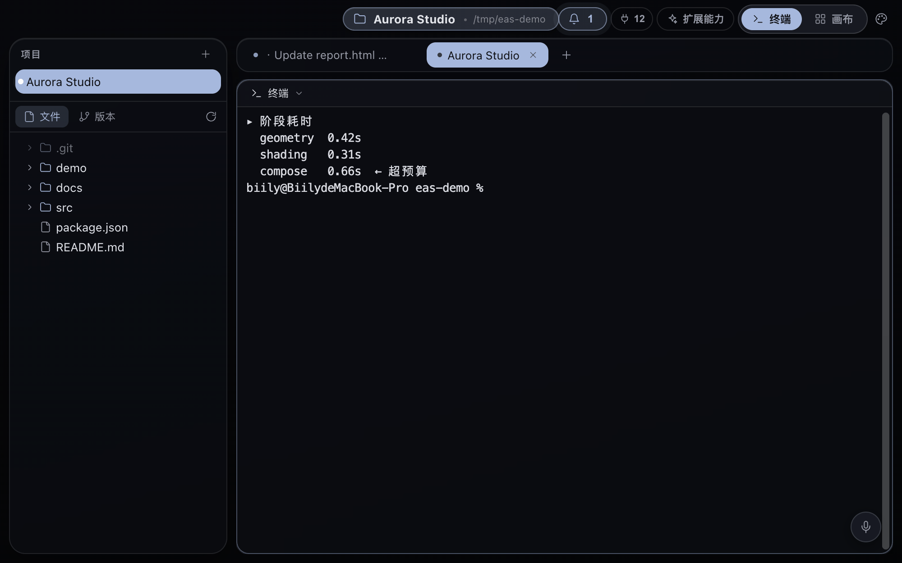
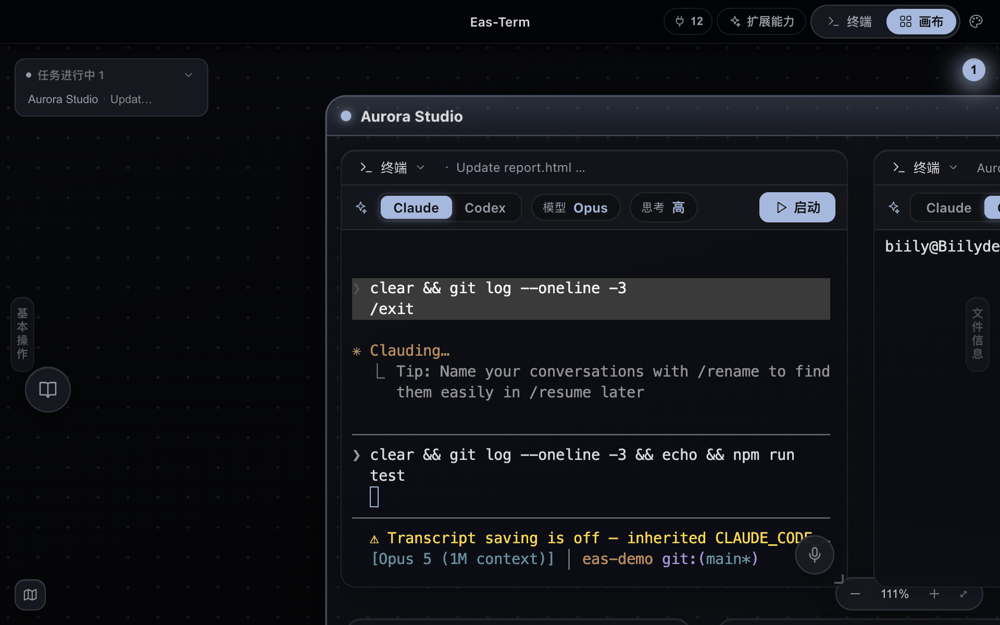
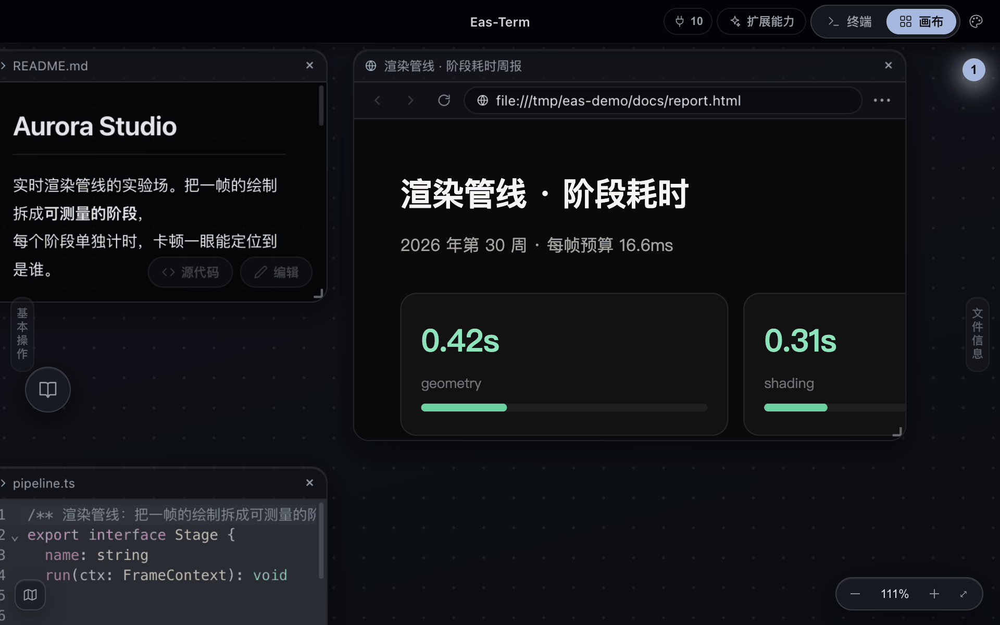
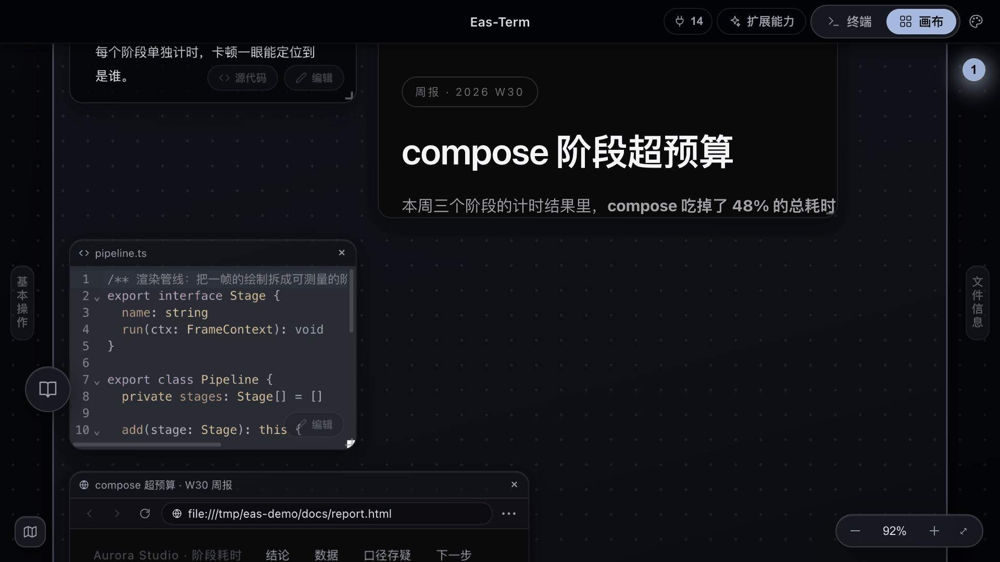

Multiple terminals, any split
Split horizontally or vertically like in your editor, with one set of tabs per project.
The workbench for AI agents
Give your LLMs a home here, and I'll help you get the work done.
macOS 12+ (Apple Silicon and Intel) · Windows 10+ (x64)


Workflows
Ask Claude Code in the terminal to build a page, and the HTML it produces opens as a preview node on the canvas, right next to the terminal. Change it, look at it, repeat, without hunting between an editor, a browser and a terminal.

Split horizontally or vertically like in your editor and run several terminals side by side. Each project gets its own set of tabs, so switching projects switches the whole context. No more
cd-ing back in.

Launch Claude Code or Codex from any terminal node in one click, and it remembers your model and reasoning level. Sessions are tied to their terminal, so going back through history only shows that terminal's conversation, never someone else's.

.md files render as formatted documents by default, with a one-click toggle to source in the bottom-right corner. Every text preview can be edited and saved in place. Git
history, diffs and reverts are canvas modules too.

Features
Split horizontally or vertically like in your editor, with one set of tabs per project.
Terminals, web previews, code, images and design files are all modules on the canvas, grouped into Frames by project. Zoom and pan freely.
Launch Claude Code / Codex from any terminal node in one click, with your model and reasoning level remembered. Sessions are tied to their terminal, so history never gets mixed up.
The AI can drive the canvas directly: open its HTML output as a preview, tidy the layout, send a notification when it's done. 13 tools, ready to go with zero configuration.
Links opened by CLI tools in the terminal open right on the canvas instead of kicking you out.
Speak and the text goes into the terminal. Runs locally, never uploaded.
Design and animate right on the canvas, then export to your project's demo/ folder.
.md files render formatted by default, with a source toggle in the bottom-right. Every text preview can be edited and saved in place.
Commit history, diffs and reverts, all in canvas modules.
Just a folder of Markdown, with a file tree and knowledge graph in the left drawer. Drop material into the inbox and the AI files it, writes notes and keeps the log by your rules. Works with both Claude Code and Codex.
Scout, builder, reviewer, writer… Bind a role to each new session, each with its own conventions, model and tool permissions. Reorder roles, recategorize them, or create your own.
242 interaction, motion and UI terms, each with an illustration and implementation notes. One click drops the description into your terminal prompt. For when you can't quite put the effect you want into words.
AI Integration
Eas-Term ships with its own MCP server, wired up the moment you install the app. Claude Code or Codex running in the terminal doesn't just hand you back a wall of text. It can put its output right in front of you.
13 tools in total, bundled with the app. No config files to write by hand.

Download
Notarized: double-click to open, Gatekeeper won't block it.
NSIS installer. Not code-signed yet, so on first run Windows SmartScreen will say "Windows protected your PC". Click "More info → Run anyway".
Looking for the full list of builds and release notes? Go to the download page →